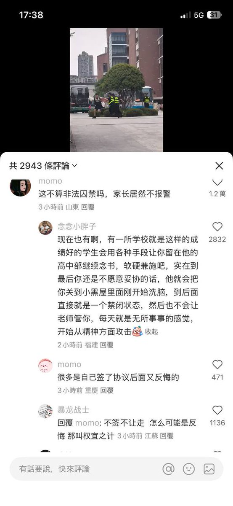
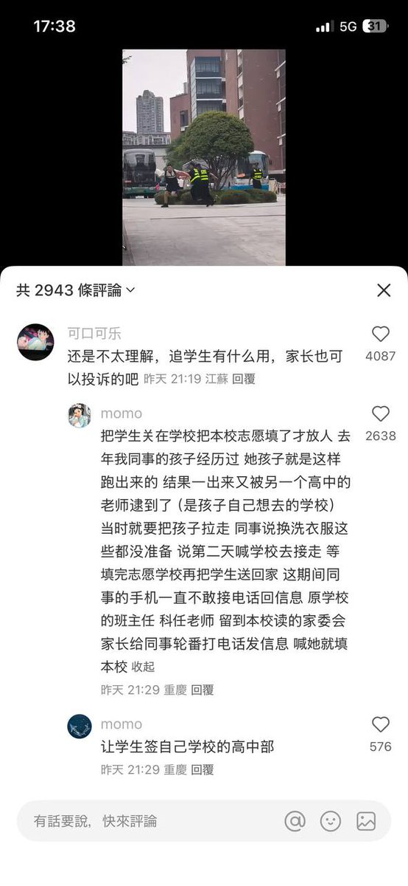

小虚空🍥
@tokerumaisurii
我突然不想去重庆了，好压抑好恶心，说什么都解除不了这种感觉。


李老师不是你老师
@whyyoutouzhele
中考结束，重庆高中开启抢生源大战。各个学校为了留住优等生想尽办法，考生一下考场，就派大巴拉走，美其名曰是组织参加游学活动，实则是逼学生签约本校。有学校甚至游学期间会收走学生手机，填报结束才退还。据悉，24年开始，执行志愿需要刷脸，不像以前只要知道学生密码，就可代为填报。另外，现在自 https://t.co/LSq4doYd02